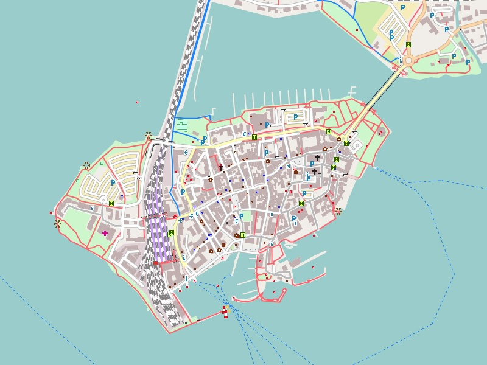

Island of Lindau (Bodensee) - the only 0.68 sq km island is densely populated with about 3000 inhabitants.
Germany
German
Garmin GPS-device: (1.8 GB)
Germany - Install image for micro SD card
Microsoft Windows: (1.9 GB)
Germany - GMAP Install Archive (full) for Garmin BaseCamp
Apple Mac OS X: (1.9 GB)
Germany - GMAP Archive for Garmin BaseCamp